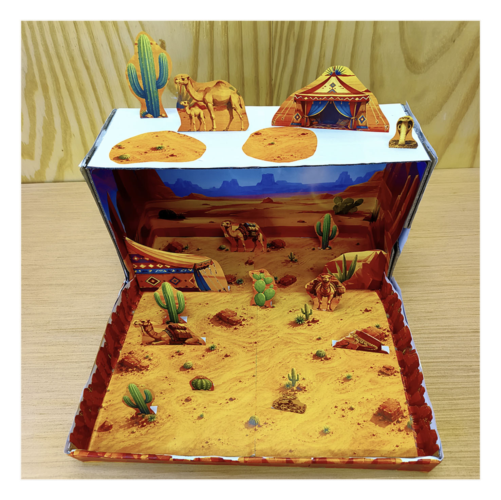
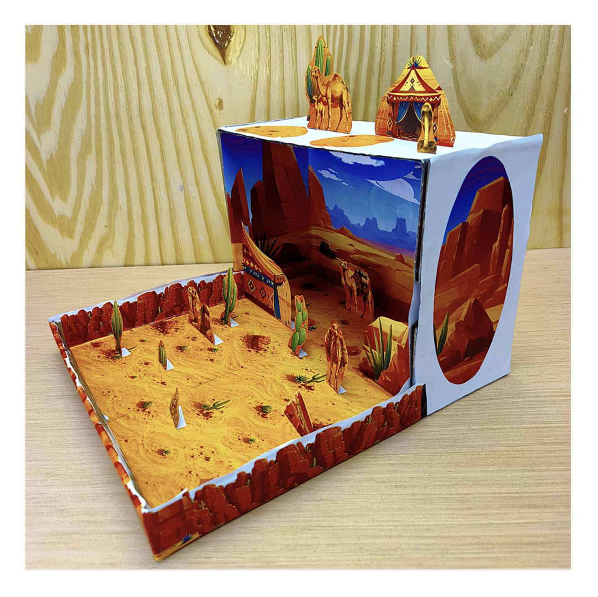
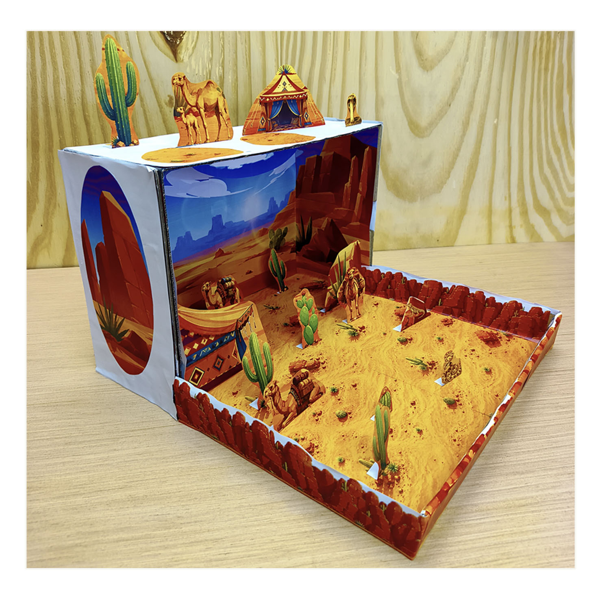
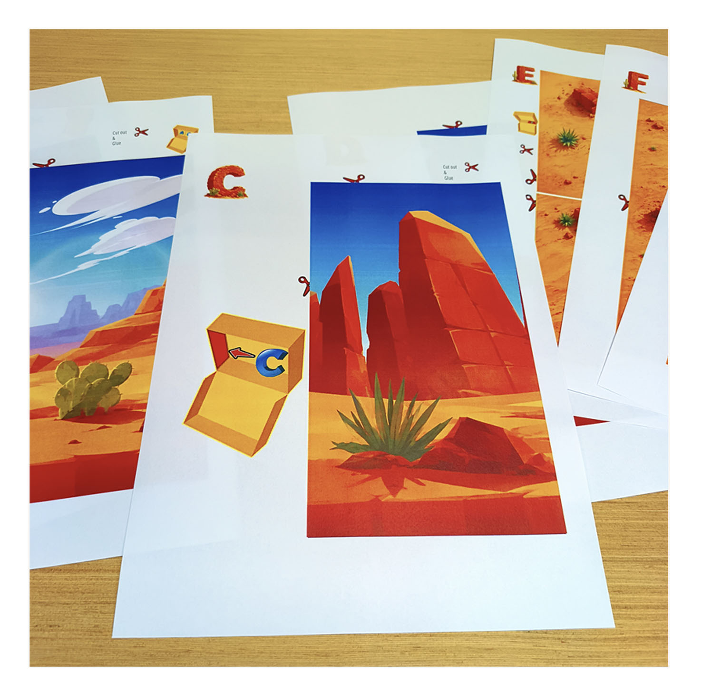
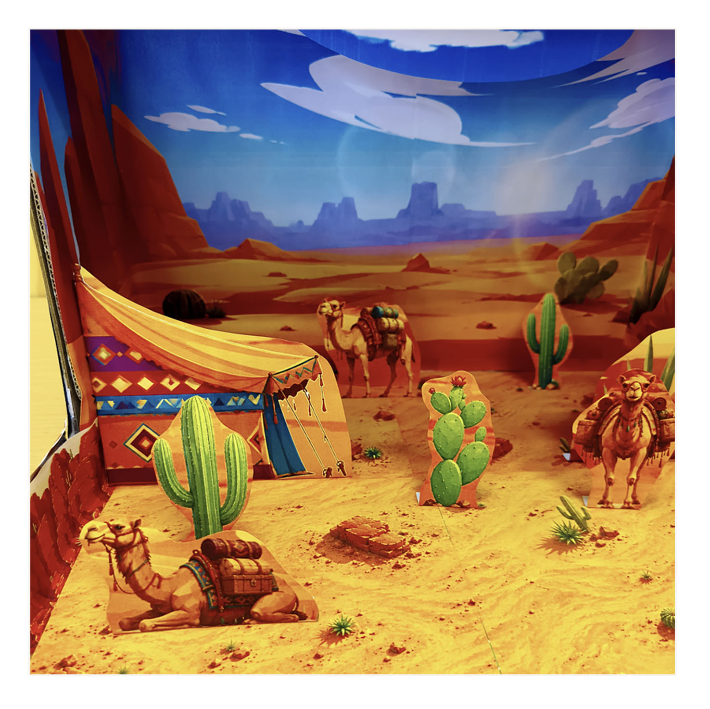

Top View
See how the scenery and cut-outs are arranged across the shoebox floor.

Create a colorful miniature desert with camels, tents, desert animals, plants, sand dunes and rocky scenery. A hands-on printable project for exploring desert habitats, geography and life in dry environments.
View the Printable Kit on EtsyDeserts offer a completely different environment to explore. With open sandy landscapes, scarce water, specialized plants and animals, they make a fascinating subject for a school geography or habitat project.
Kids can build their own desert scene with camels and camel caravans, traditional Bedouin-style tents, desert animals, cacti, plants, dunes and rocky formations.
The project works well for classroom activities, homeschool lessons, geography studies, science units, habitat studies or simply a creative afternoon at home.
Once finished, the shoebox can also become a backdrop for storytelling, imaginative play, photography or a simple stop-motion film.
Looking from above and from both sides shows how the flat printed pieces work together to create depth inside the shoebox.

See how the scenery and cut-outs are arranged across the shoebox floor.

A closer look at the layers that give the paper desert its three-dimensional feel.

Another angle on the miniature landscape, animals and desert details.
The project starts as printed pages and ends as a colorful three-dimensional desert scene inside an ordinary shoebox.

Print the 13 full-color pages with backgrounds, animals, plants and desert scenery.

Cut out the illustrated pieces and prepare the backgrounds and scenery for assembly.
Arrange and glue the pieces inside the box to build your own miniature desert habitat.
Camels, tents, plants and landscape details turn the printed scene into a miniature world kids can explore from close up.



The illustrated pages are designed to make the project visual and approachable. Kids can see the scenery and individual elements before cutting them out and deciding where they belong in the shoebox.
The process is deliberately simple: print, cut, arrange and glue. That makes it suitable for a creative home activity as well as a classroom or homeschool project.
See how the printable pieces come together inside the shoebox to form the finished desert scene.
The shoebox is not included. The ideal fit is a typical shoebox approximately 8.5–10 inches long (roughly UK shoe size 6–7.5). A slightly larger or smaller box can be adjusted with scissors, a marker or a little extra craft material.
Desert habitats receive very little rainfall, so plants, animals and people have to deal with heat, dryness and limited water. That makes a desert diorama a useful starting point for conversations about climate, geography and adaptation.
Kids can think about why camels are so well suited to dry landscapes, how desert plants cope with scarce water, where animals find shelter, and how people travel and live in arid regions.
The finished model can support a geography lesson, animal habitat study, classroom presentation or science project while still being a fun creative build in its own right.
Discover more printable shoebox dioramas and compare the landscapes, wildlife and ecosystems found in different habitats.
If you need a desert habitat, camel or geography project for a child, the complete 13-page printable Desert Shoebox Diorama is available as a digital download from my Etsy shop.
View the Desert Habitat on Etsy